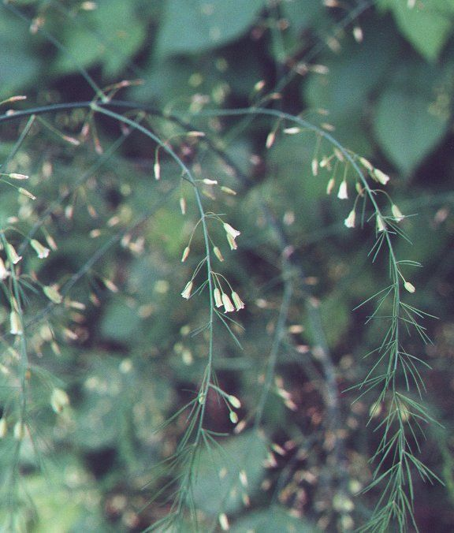

|
ECONOMICALLY
IMPORTANT PLANTS OF INDIA |
| Under-utilized Food and Fodder species and their wild relatives | Contributed by Ms.M.L Annapurna And Dr. Dhanapal, UAS, Bangalore |
Asparagus officinalis.Linn.
Taxonomic Details

----- Correct Name
----- Classification
----- Synonyms
----- Common Names
Other Biological Details
----- Habit and Habitat
----- Diagnostic Features
----- Reproductive Biology
---------- Breeding System
---------- Phenology
---------- Pollinators
---------- Seed Biology
---------- Seed Germination
----- Major Pests and Diseases
Economic Potential and Uses
----- Parts Used
----- Harvesting Practices
----- Produce and Products
----- Chemistry
----- Processing Techniques
----- Other uses
----- Economic Potential to the Country
----- Export Potential
Miscellaneous Information
Literature
Correct Name : Asparagus officinalis
.Linn.
Family : Liliaceae
Synonyms :
Common Names :
English: Common or Garden Asparagus
Hindi: Halyun, Nagdown
Bengali: Hillua
Malayalam:
Misc:
Konk.: Asparagus, Asparg
Portugese: Espargo hortense
HABIT
& HABITAT
Herbaceous, woody, and erect as well as climbing forms of asparagus (2,3).
The commonly grown asparagus (var. altilis, L.) is a dioecious perennial herb,
about 4-10 feet tall. The roots of cultivated asparagus are numerous and fleshy.
They occur horizontally in the soil and serve as a storage organ. Spear production
occurs primarily at the expense of the sugars stored in the fleshy roots. The
crown is made of roots and rhizomes, which are underground stems. The harvested
spear is a stem that arises from a bud on the rhizome. The crown of the roots
grows closer to the surface of the soil each year, and older fibrous roots die
and rot away (1,2). Very few varieties of asparagus have been well established.
In
India it is distributed in cultivated fields and Plains, Garden
and temperate forests.
Availability :
Plenty, Throughout India
Misc: Sindhudurg.
Zone: Central, North, South and West.
State: Goa Daman Diu, Himachal Pradesh, Maharashtra, Tamil Nadu and Uttar Pradesh.
District: Allahabad, Chamba, Goa, Kinnaur and Palni hills.
Status :
Domesticated and also found in Wild.
REPRODUCTIVE
BIOLOGY
Breeding System :
The
commonly grown asparagus is a dioecious, having male (yellowish-green) and female
(less conspicuous) flowers on separate plants. There are also all-male
lines, such as Franklin F (also known as Limbros 126), used for either white
or green asparagus production. The impetus to produce staminate rather than
pistillate plants lies in their higher, more stable yields, although pistillate
spears are generally heavier. The rapid and efficient production of thousands
of unique, high-yielding staminate asparagus clones has been achieved by tissue
culture and, in particular, meristem culture. There is no botanical distinction
between green and white asparagus. Production of the two types is based on differing
cultivation practices white (blanched asparagus) is devoid of pigment since
it is grown in dark.
Phenology:
The Flowering occurs during February-April and fruiting occurs in March - May
and also there is a report of flowering occurring in Jun - Sept.
Pollinators
:
Bees
Seed
Germination :
The asparagus crop is either direct-seeded or one-year-old crowns are transplanted
in the field. Seeds are drilled 2.5-5 cm deep in furrows 15-20 cm below ground
level for direct seeding. Crowns are transplanted 20-25 cm below ground level
and 30 cm apart.
The distance between rows is 1.8 m for green asparagus and
2-2.5 m for white asparagus.
Cultural practices:
Seedlings are raised from good-quality
seeds and used for planting. Young plants seeded the previous year, called crowns,
are removed in the spring before growth start and planted in the field within
a few hours. Potassium and phosphorus are added to the soil before planting
the crowns. Nitrogen is used for top-dressing. A fertilizer dose of 65-90 kg
of N, 35 kg of P, and 35 kg of K per hectare has been recommended. In young
asparagus plants, there is usually a 1:1 sex ratio. Male plants generally produce
more spears than female plants. Asparagus is one of the few perennial vegetables.
The spring production of spears is at the expense of food stored in the roots
from the previous year. The cutting season should be limited in duration so
the plants have ample time to manufacture and, store food for the succeeding
year's crop.
Soil and Climate
Well-drained, light-textured soils with high contents of organic matter are
most suitable for asparagus cultivation. The spears should emerge from the soil
without damage. A cool season with a mean air temperature of 16-240C favors
crop growth. The crop should be
protected from freezing.
MAJOR
PESTS & DISEASES
Pests:
Asparagus beetles (Crioceris asparagi L. and C. duodecimpunctata
L.), and garden centipedes (Scutigerella
imma.cula.td) are the important pests of asparagus, causing serious losses
(3).
Diseases:
The symptoms of and possible preventive measures for bacterial
soft rot (Erwinia carotovord) and
rots caused by various species of Fusarium
and Phytophthora have been described
by Ryall and Lipton (5). Asparagus rust (Puccinia
asparagi),Fusarium wilt are the few diseases which causes serious loss to
the crop.
Parts
used :
Stem,
Leaves
1. Root used as an antitubercular,berry-contraceptive,asparagusic acid-nematicide,asparagusic acid, its dihydro derivative,S-acetyldihydroasparagusic acid,asparagusic acid-anti-S-oxide and its stereo isomer-effective plant growth inhibitors,seeds possess mannosidase and aminoacylase activites.
Harvesting Practices :
The edible portions of asparagus are the spears or stems (Cladophylls) that
develop from the crown. Harvesting (first cutting) of asparagus usually starts
with the third season, or after the completion of two full growing seasons,
although in some areas having longer seasons, it is harvested during the second
season. Green asparagus, which is the greater portion of the crop, is cut
1 or 2 inches below the surface of the soil. White asparagus is produced by
blanching treatment. Ryall and Lipton (5) advocated selective harvesting of
asparagus, since new shoots appear daily over a period of 6-10 weeks. Mechanical
harvests of asparagus have been reported to decrease yield and quality.
Since deterioration sets in and asparagus loses freshness
and quality quickly after harvest,
Harvest maturity of asparagus is usually reached when spears
reach about 12.5-20cm above the ground, and they should be cut before they are
too long and before the heads or tips begin to spread. Mack et al. , however,
reported that the greatest yield of asparagus can be realized when the spears
are allowed to grow up to 20-25 cm in length. Pinkau tabulated
the effects of stem length on the yield, quality, and market price. Daily growth
of 0.5-1.6 cm was temperature dependent, with average temperatures being more
than 18°C. Pinkau recommended daily harvesting and stated that harvesting
every second day is more profitable at lower temperatures. Kaufmann and Starz emphasized the importance of frequent cutting of asparagus, with one day's
delay causing the spears to deteriorate from grade A to grade B (except for
the cultivar start, which can be left for an extra day). These workers further stated that grades A and B should be cut 2-3 cm below soil level and
that grade C spears should be
cut at ground level.
Produce and Products
:
Chemical composition:
Asparagus is a good source
of vitamin A. The vitamin A content of green asparagus is higher than that of
white or blanched asparagus. Green asparagus (100 g edible portion) contains
93 g of water, 2.2 g of protein, 21 mg of calcium, 700 I.U. of vitamin A, 30
ing of ascorbic acid, 0.20 mg of thiamine, 0.16 mg of riboflavin, and 1.0 mg
of niacin.
STORAGE:
Fresh asparagus is highly perishable and deteriorates rapidly at temperatures
above
5°C.Significant changes in respiration, nitrogen metabolism, and other metabolic changes
occur within 3 hours of harvest. The
spears should be cooled immediately after cutting, preferably by hydro cooling,
and placed at a low temperature. In addition to general deterioration, growth,
loss of tenderness, loss of flavor, loss of vitamin C, and development of decay
take place at moderately high temperatures. Asparagus can be kept successfully
for about 3 weeks at 20°C . The biochemical changes in harvested
asparagus depend upon the temperature and storage atmosphere . The most
significant changes include an increase in spear length and weight and in sugars
and fiber. Bisson et al. demonstrated that spears grows in length if
butts have sufficient moisture. They also noted that the growth rate was least
at 0.6"C and increased with a rise in temperature
to 5.0, 13.3, 25, and
35°C. The increase in weight was attributed to absorption of water. The
losses in reducing and total sugars were pronounced at higher temperatures,
a maximum rate of loss occurring during the first 24 hours of storage. The crude
fiber content, however, increased at all temperatures. Crude fiber and lignification
were least at the lowest temperature. Asparagus can be held for about 10 days
at 0°C, but it is subject to chilling injury when held longer at this temperature.
High humidity is essential to prevent desiccation, particularly at the
butt ends. The desired relative humidity is obtained by placing the butts of
asparagus on wet pads. A high relative humidity can also be obtained by
pre-packing
spears in perforated film. Asparagus with white butts is less perishable than
all-green asparagus. Bacterial soft rot, which can occur at either the tip or
butt of the asparagus, is the principal decay .
A. Low-Temperature Storage
Owing to the highly perishable nature of asparagus,
the quickest possible cooling to temperatures below 4.4°C is very advantageous.
The field heat should be removed by employing hydrocooling or vacuum-cooling. Although vacuum-cooling is feasible, it is less desirable due to incomplete
cooling. Hydrocooling reduces the temperature from 21.1 to 2.2°C within
about 15 minues; chlorine is generally added to the water used for cooling to
reduce the bacterial population. The storage life of asparagus decreases rapidly
as the temperature rises above 4.4°C. Storage conditions of 0°C with
95% relative humidity are generally recommended to extend the marketable life
of asparagus for about 3-4 weeks. Rapid sorting, packing, and cold storage
at 0-60C and 90% relative humidity maintain high quality. Adamicki cooled harvested (after 2 or 8 hours) spears in water at 0.5-1.00C for 9-12
minutes and then stored them at 2°C for 1-5 days followed by 2 days at 200C
(simulated shelf life). This significantly increased the fiber content.
B. Controlled Atmosphere Storage
Controlled-atmosphere (CA) storage of asparagus is known to reduce postharvest
deterioration. CA storage prevented the development of off-flavor, water
loss, toughening, and chlorophyll loss. CA effects on vitamin C content
depend upon the atmosphere composition. Exposure of asparagus to an atmosphere
of 7 ± 2% CO2 and 2% O2 for 24 hours retards bacterial rots. Lipton demonstrated that, while 5% CO; levels are ineffective in controlling the growth
of Phytophthora, 10% or higher concentrations of CO; caused pits at 6.1°C.
No chilling injury was noticeable at 1.7°C and 15% CO2concentration.
Lipton reported that atmosphere lacking 0; or containing 20 or 30% CO2caused
severe injury at 3 or 6°C, while lower CO2 concentration caused injury only
at 6°C. CA storage of asparagus, however, delayed the rate of
degradation of chlorophyll and prevented the development of Phytophthora,
toughening, and fibrousness. Ryall and Lipton concluded that CA storage
of asparagus is a useful adjunct to good refrigeration, even for relatively
brief periods. Asparagus particularly benefits from CO; concentrations of 7
+ 2%, if post harvest decay is to be reduced and if temperature control is uncertain.
About 12 ± 2% CO2 is permissible at 0-2.8OC if both decay and toughening
are to be controlled. Lipton concluded that CA storage of asparagus has
three advantages: reduction of decay, retardation or even reversal of toughening,
and a more desirable color. It provides a useful technique not only to retain
a high quality in fresh asparagus but also to improve the quality of the processed
product.
Baxter and Walter studied the effect of CA storage on the quality of asparagus
stored for 28 days at 20C in air, a flow- through CA system, or 14 days in polymeric
film consumer packages. CA-stored spears retained more sugars, organic acids,
and soluble proteins than spears stored in air. Spears stored in vented consumer
packages had a useful life of 14 days whereas those in non vented packages started
to break down after 8 days. Spears from vented packages lost more weight but
retained more sugars and organic acids than those from nonvented packages. Andre
et al. reported that the vacuum pre refrigeration of asparagus spears in
a controlled atmosphere (in polyethylene bags with silicon elastomer windows)
within 6-8 hours of harvest followed by cold storage at 1°C was the best
long-term method of storage (20-30 days). Prerefrigeration by water was possible
for short-term storage. Fungal development during storage could be prevented
by flushing with CO; (3.0% for 24 hours) or by maintaining a CO; concentration
of 5-10%. Shelf life of several leafy vegetables including asparagus is reported
to be doubled by immersing the cut ends or dipping the vegetable in solutions
of CCC.
C. Irradiation
Salunkhe et al. reported that acceptability of irradiated asparagus
decreased with an increase in the dose of radiation when evaluated 24-48 hours
and 10 days after radiation. The tenderness of asparagus spears measured
in terms of shear-press values increased as the dose and rate of radiation increased.
1. Gupta, K., G. R. Singh, J. L. Mangal, and D. S. Wagle, Salad crops-dietary importance, in Encycloppaedia of Food Science, Food Technology and Nutrition (R. MaCrae, R. K.Robinson, and M. J. Sandier, eds.). Academic Press, London, 1993, p. 3963.
2. Lipton, W. J,, Physiological changes in harvested asparagus as related to temperature of holding, Ph.D. thesis. University of California, Davis, 1957.
3. Ryall, A. L., and W. J. Lipton, Handling, Transportation, and Storage of
Fruits and Vegetables. Vol. 1: Vegetables and Melons, The AVI Pub. Co., Westport,
CT, 1972.
4. Salunkhe, D. K., and B. B. Desai, Postharvest
Biotechnology of Vegetables, Vol. 1, CRC Press, Boca Raton, FL, 19S4.
5.
Thompson, H. C., and W. C. Kelly, Vegetable Crops. 5th ed., McGraw-Hill Book
Co., Inc. New York, 1957.
6. Yamaguchi, M., World Vegetables, Principles, Production and Nutritive Values,
AVI Pub. Co Westport.CT, 1983.
.jpg){kind=link}